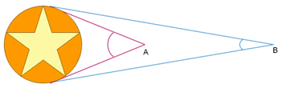
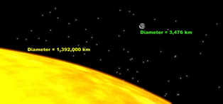
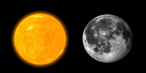

When we look at objects in the night sky, we often do not know how far away they are. For example, although the stars look like they are on the inside of a sphere of very large radius that surrounds the Earth, they are all at vastly different distances from our Solar System. This makes it hard to judge the actual size of celestial objects.
The angular diameter of an object is the angle the object makes (subtends) as seen by an observer. This is demonstrated in the diagram below, where the angular diameter of the object appears larger to an observer at A (closer to the object) than to an observer at B. Angular diameter can also refer to the distances between two objects, measured on the celestial sphere.

For an observer on the Earth, the angular diameter of the Moon and the Sun are quite similar ( ~ 0.5o = 30 arcmin). In reality, the Sun’s physical diameter is 400 times bigger than the Moon, while the Moon is ~ 400 times closer to the Earth.
|

Actual size of the Sun and Moon: the Sun’s diameter is 400 times the diameter of the Moon.
|

The angular diameter of the Sun and Moon are almost the same, as seen by an observer on Earth.
|